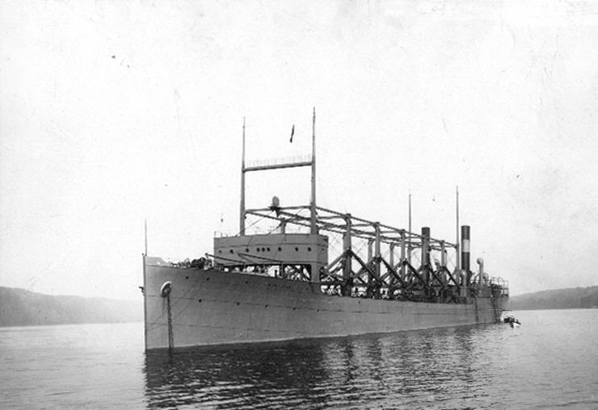
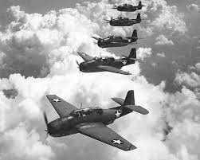
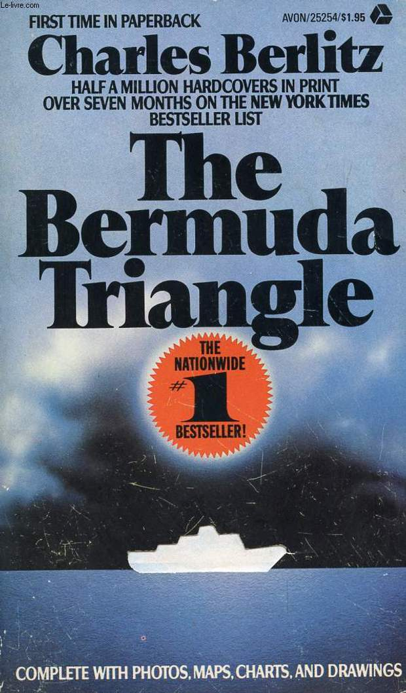

Бермудський трикутник. Таємниця, якої насправді немає. Як з'явилася легенда та чому насправді зникають літаки і кораблі
Владислав Бурда
«На борту дрейфуючого судна лише один собака». Під таким заголовком 23 жовтня 1944 року вийшла невеличка замітка на 21-й сторінці газети The New York Times. В ній розповідалося про кубинський торговельний корабель «Рубікон», який 22 жовтня біля берегів Флориди помітила патрульна служба ВМС США. Судно знаходилось в прекрасному стані, проте на його борту не знайшли жодного члена екіпажу, а в судовому журналі — жодного запису, що повідомив би про долю команди. Моторошна історія. А для прибічників конспірологічних теорій — тим паче.
Тож не дивно, що згодом «Рубікон» приписали до числа жертв Бермудського трикутника — зони в Атлантичному океані між Бермудськими островами, Пуерто-Ріко та Флоридою, в якій начебто без якихось логічних причин зникають кораблі та літаки.
Chas News розповідає, як з'явилася ця легенда та як з нею останні 50 років борються науковці.
«Циклоп», «Рубікон», «ланка 19»
Якщо прочитати замітку The New York Times до кінця, то вже в ній можна побачити ймовірне пояснення таємниці «Рубікону». На судні не виявили не тільки екіпажу, а й жодної рятівної шлюпки, а швартувальний канат був розірваним. Останній запис в судовому журналі датувався 26 вересня, коли корабель зайшов у порт Гавани. Деталей бракувало, проте журналісти припустили, що «Рубікон» у порту застав ураган, екіпаж екстрено евакуювався на шлюпках, забувши про собаку, після чого швартувальний трос лопнув і судно понесло в море. Більше про цю історію топові американські ЗМІ не писали — у розпал Другої світової війни вистачало більш актуальних новин. І, звісно, жодна газета, розповідаючи про «Рубікон», не згадала про Бермудський трикутник. Те ж саме стосується і інших відомих жертв «аномальної зони».
Судно «Циклоп» на річці Гудзон в 1911 році
В березні 1918 року в Атлантичному океані зник корабель «Циклоп». Із 306 членами екіпажу та 11 тис. тонн марганцевої руди на борту. Його уламки так і не знайшли, так само, як і не встановили остаточну причину трагедії. Швидше за все, судно затонуло: відомо, що в нього не працював один з двигунів, а вантаж майже на 3 тис. тонн перевищував допустиму норму. Проте охочі відразу висунули багато альтернативних версій. Наприклад, що «Циклоп» потопила німецька субмарина, або що екіпаж, збунтувавшись, відвів корабель до Німеччини. Журнал Literary Digest навіть припустив, що судно атакував гігантський кальмар.
Наприкінці 1944 року загинули ще два близнюки «Циклопа» — «Протей» та «Нерей», однак їхнє зникнення збіглося з атакою японців на Перл-Харбор і тому викликало набагато менший резонанс.
Ланка з «Евенджерів» в небі на Вірджинією, 1942 рік
5 грудня 1945 року сталася найвідоміша трагедія в історії Бермудського трикутника. Зникли одразу п'ять торпедоносців-бомбардувальників «Евенджер», які увійшли в історію як «ланка 19», а потім і рятувальний гідролітак PBM-5 Мартин «Марінер», що вирушив на її пошуки. Люди, що проводили подальші розслідування, користуючись розшифровками радіоперемовин, дійшли висновку, що у керівника «ланки 19» Чарльза Тейлора вийшов з ладу компас. Військовий неправильно зорієнтувався, заблукав над океаном, врешті, коли закінчилося пальне, наказав посадити літаки на воду і вони стали жертвою шторму. А рятувальний «Марінер» вибухнув у повітрі — ці літаки прозвали «летючими цистернами», бо через особливості конструкції у кабіні накопичувалися пари бензину і будь-яка іскра могла призвести до фатальних наслідків. Пропливаючий по курсу «Марінера» танкер якраз помітив у небі вибух, а на воді маслянисту пляму. Преса активно обговорювала ці події, однак, як у випадку з «Циклопом», «Рубіконом», «Протеєм» та «Нереєм», нічого не писала про Бермудський трикутник. Адже його тоді ще банально не вигадали.
Народження легенди
Сучасна легенда про Бермудський трикутник веде свій початок від опублікованої в 1950 році статті журналіста Associated Press Едварда Джонса під назвою «Загадки моря все ще збивають з пантелику людей в епоху кнопок». Сам термін він ще не згадував, проте перелічив зниклі в цьому районі за останні роки кораблі та літаки (у тому числі «ланку 19»). Та підсумував, що попри стрімкий розвиток технологій пояснити ці інциденти не вдається. Ідею підхопили та почали розвивати.
Карта із позначенням зникнень літаків зі статті Едварда Джонса
І от в 1964 році американськиписьменник-конспіролог Вінсент Геддіс вперше написав саме про Бермудський трикутник. «Тільки за останні два десятиліття ця морська таємниця біля нашого чорного входу забрала майже 1000 життів», — зазначив він у статті в журналі Argosy. При цьому до жертв трикутника Геддіс зарахував не лише «ланку 19», але й згадані вище «Циклоп» та «Рубікон» і багато інших літаків та кораблів. Після цього з кожним роком про аномальну зону почали писати все більше авторів. Поки одні намагалися пояснити загадкові зникнення різними магнітними аномаліями чи атмосферними абераціями, інші придумали більш фантастичні версії.
Історії зниклих суден обростали містичними подробицями. Так, наприклад, з'явилася підкорегована версія радіоперемовин «ланки 19», в якій Тейлор говорив про «не схожий на себе океан» і загадкову «білу воду».
Нарешті в 1974 році в гру вступив Чарльз Берліц. Випускник Єльського університету, знавець 32 мов та автор кишенькових словників для туристів, він у похилому віці зацікавився підводною археологією і паранормальними явищами. Спочатку наполегливо шукав Атлантиду, про яку в 1969 році видав окрему книгу, а за п'ять років випустив новий шедевр — «Бермудський трикутник».
Обкладинка «Бермудського трикутника» Чарльза Берліца
Загадкові зникнення Берліц пов'язав із Атлантидою, яка, на його думку, знаходилась на дні Атлантичного океану. Таємничі білі помутніння води — це нібито результат підняття нагору мулу від зруйнованих мармурових будівель. Відхилення магнітної стрілки викликані скупченням на дні металів, що залишилися від будівель атлантів. Коливання рівня води, туман, несподівані шторми — все це результат нестабільності ділянки Світового океану, яка ще не оговталася від опускання під воду великого острова.
«Бермудський трикутник» Берліца одразу став хітом.
У списку бестселерів The New York Times книга протрималася 40 тижнів, її переклали 22 мовами та продавали мільйонними тиражами по усьому світу. В 1977 році Берліц випустив нову книгу «Без сліду», в якій зібрав «свідчення» очевидців аномалій трикутника та навіть заявив, що знайшов біля побережжя Флориди величезну піраміду. Жодних фотодоказів він, звісно, не надав. Однак ідею підхопили.
Жовта преса і досі вряди-годи пише про загадкову скляну піраміду атлантів, чи про їхні кристали, які своїм випромінюванням збивають з курсу кораблі. Потім до переліку «додалися» прибульці з інших світів, портали в іншу реальність тощо.
При цьому межі Бермудського трикутника в уяві авторів постійно розширювалися, а сам він «перетворювався» то на трапецію, то на квадрат.1979 року на хвилі хайпу Стівен Спілберг навіть випустив фантастичний фільм «Близькі контакти третього ступеня». За сюжетом, іншопланетяни перемістили літаки «ланки 19» до мексиканської пустелі, а вантажне судно «Котопаксі», яке затонуло в трикутнику в 1925 році, — до пустелі Гобі в Монголії.
Наука проти конспірологів
У 1975 році відчутного удару по конспірологам завдав бібліотекар та колишній пілот Ларрі Куше. У книзі «Бермудський трикутник: таємниця розгадана» він проаналізував 51 найвідоміше зникнення і дійшов висновку, що більшість кораблів та літаків зазнали аварій внаслідок ураганів, несправності обладнання чи помилок екіпажу. А конспірологи просто замовчували чи перекручували незручні факти. Згодом він напише: «Якби Берліц повідомив, що човен червоний, то майже стовідсотково насправді він був іншого кольору». Проте головний висновок, який зробив Куше, — Бермудського трикутника не існує: в цьому районі кораблі та літаки зазнають аварій не більше, ніж в інших частинах Світового океану.
Об'єднані сили природи та людська схильність до помилок перевершують найбільш неймовірну наукову фантастику
Що ж до причин загадкових зникнень та аварій, то крім людського фактору, свою роль зіграли і сили природи. «Об'єднані сили природи та людська схильність до помилок перевершують найбільш неймовірну наукову фантастику», — стверджує Національна океанічна служба США. Крізь Бермудський трикутник проходить так звана Алея ураганів — зона Атлантичного океану, де формуються більшість тропічних штормів. Свою роль відіграє і Гольфстрім — потужна океанська течія, яка може викликати стрімкі зміни погоди та відносити на великі відстані від місця аварій уламки кораблів. Хоча з часом і їх потроху знаходять. Наприклад, відомий завдяки Спілбергу «Котопаксі» знайшли на дні океану біля північного узбережжя Флориди. Уламки помітили ще в 1980-х роках і в січні 2020 року остаточно встановили, що це затонулий в 1925році корабель.